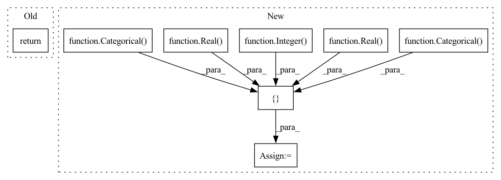

Pattern ID :16929

Before Change
return
def model_SGDClassifier(self, **kwargs):
return
def model_Perceptron(self, **kwargs):
return
After Change
def model_SGDClassifier(self, **kwargs):
//// https://scikit-learn.org/stable/modules/generated/sklearn.linear_model.SGDClassifier.html?highlight=sgdclassifier//sklearn.linear_model.SGDClassifier
self.dims = [
Categorical(categories=["l1", "l2", "elasticnet"], name="penalty"),
Real(low=1e-6, high=1e-2, name="alpha", num_samples=self.num_samples),
Real(low=0.0, high=1.0, name="eta0", num_samples=self.num_samples),
Categorical(categories=[True, False], name="fit_intercept"),
Integer(low=500, high=5000, name="max_iter", num_samples=self.num_samples),
Categorical(categories=["constant", "optimal", "invscaling", "adaptive"], name="learning_rate")
]
self.x0 = ["l2", 1e-4, 0.5,True, 1000, "invscaling"]
return {"model": {"SGDClassifier": kwargs}}
In pattern: SUPERPATTERN
Frequency: 4
Non-data size: 8
Instances
Fragment ID: 56978117
Project Name: atrcheema/ai4water
Commit Name: 0ed3c61c81082e7d6983fd9383f49ac7ee4528dd
Time: 2021-02-03
Author: ather_abbas786@yahoo.com
File Name: dl4seq/experiments.py
M Class Name: MLClassificationExperiments
N Class Name: MLClassificationExperiments
M Method Name: model_SGDClassifier(1)
N Method Name: model_SGDClassifier(1)
M Parent Class: Experiments
N Parent Class: Experiments
M File Name: dl4seq/experiments.py
N File Name: dl4seq/experiments.py
M Start Line: 828
M End Line: 828
N Start Line: 1175
N End Line: 1184
'>
Before Change
return
def model_LogisticRegression(self, **kwargs):
return
def model_PassiveAggressiveClassifier(self, **kwargs):
return
After Change
def model_LogisticRegression(self, **kwargs):
//// https://scikit-learn.org/stable/modules/generated/sklearn.linear_model.LogisticRegression.html?highlight=logisticregression//sklearn.linear_model.LogisticRegression
self.dims = [
Categorical(categories=[True, False], name="dual"),
Real(low=1e-5, high=1e-1, name="tol", num_samples=self.num_samples),
Real(low=0.5, high=5.0, name="C", num_samples=self.num_samples),
Categorical(categories=[True, False], name="fit_intercept"),
Integer(low=100, high=1000, name="max_iter", num_samples=10)
//Categorical(categories=["newton-cg", "lbfgs", "liblinear", "sag", "saga"], name="solver")
]
self.x0 = [True,1e-6, 1.0, True, 100]
return {"model": {"LogisticRegression": kwargs}}
'>
Fragment ID: 56978119
Project Name: atrcheema/ai4water
Commit Name: 0ed3c61c81082e7d6983fd9383f49ac7ee4528dd
Time: 2021-02-03
Author: ather_abbas786@yahoo.com
File Name: dl4seq/experiments.py
M Class Name: MLClassificationExperiments
N Class Name: MLClassificationExperiments
M Method Name: model_LogisticRegression(1)
N Method Name: model_LogisticRegression(1)
M Parent Class: Experiments
N Parent Class: Experiments
M File Name: dl4seq/experiments.py
N File Name: dl4seq/experiments.py
M Start Line: 822
M End Line: 822
N Start Line: 1076
N End Line: 1085
'>
Before Change
return
def model_BaggingClassifier(self, **kwargs):
return
def model_SVC(self, **kwargs):
return
After Change
def model_BaggingClassifier(self, **kwargs):
//// https://scikit-learn.org/stable/modules/generated/sklearn.ensemble.BaggingClassifier.html?highlight=baggingclassifier
self.dims = [
Integer(low=5, high=50, name="n_estimators", num_samples=self.num_samples),
Real(low=0.1, high=1.0, name="max_samples", num_samples=self.num_samples),
Real(low=0.1, high=1.0, name="max_features", num_samples=self.num_samples),
Categorical(categories=[True, False], name="bootstrap"),
Categorical(categories=[True, False], name="bootstrap_features")
// Categorical(categories=[True, False], name="oob_score"), // linked with bootstrap
]
self.x0 = [10, 1.0, 1.0, True, False]
return {"model": {"BaggingClassifier": kwargs}}
'>
Fragment ID: 56978115
Project Name: atrcheema/ai4water
Commit Name: 0ed3c61c81082e7d6983fd9383f49ac7ee4528dd
Time: 2021-02-03
Author: ather_abbas786@yahoo.com
File Name: dl4seq/experiments.py
M Class Name: MLClassificationExperiments
N Class Name: MLClassificationExperiments
M Method Name: model_BaggingClassifier(1)
N Method Name: model_BaggingClassifier(1)
M Parent Class: Experiments
N Parent Class: Experiments
M File Name: dl4seq/experiments.py
N File Name: dl4seq/experiments.py
M Start Line: 813
M End Line: 813
N Start Line: 927
N End Line: 936
'>
Before Change
return
def model_LinearSVC(self, **kwargs):
return
def model_LogisticRegression(self, **kwargs):
return
After Change
def model_LinearSVC(self, **kwargs):
//// https://scikit-learn.org/stable/modules/generated/sklearn.svm.LinearSVC.html?highlight=linearsvc//sklearn.svm.LinearSVC
self.dims = [
Categorical(categories=[True, False], name="dual"),
Real(low=1.0, high=5.0, name="C", num_samples=10),
Integer(low=100, high=1000, name="max_iter", num_samples=self.num_samples),
Real(low=1e-5, high=1e-1, name="tol", num_samples=10),
Categorical(categories=[True, False], name="fit_intercept")
]
self.x0 = [True, 1.0, 100, 1e-4, True]
return {"model": {"LinearSVC": kwargs}}
'>
Fragment ID: 56978120
Project Name: atrcheema/ai4water
Commit Name: 0ed3c61c81082e7d6983fd9383f49ac7ee4528dd
Time: 2021-02-03
Author: ather_abbas786@yahoo.com
File Name: dl4seq/experiments.py
M Class Name: MLClassificationExperiments
N Class Name: MLClassificationExperiments
M Method Name: model_LinearSVC(1)
N Method Name: model_LinearSVC(1)
M Parent Class: Experiments
N Parent Class: Experiments
M File Name: dl4seq/experiments.py
N File Name: dl4seq/experiments.py
M Start Line: 819
M End Line: 819
N Start Line: 1064
N End Line: 1072